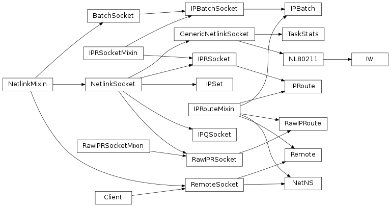
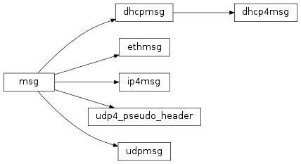

Module architecture¶
Sockets¶
The idea behind the pyroute2 framework is pretty simple. The library provides socket objects, that have:
- shortcuts to establish netlink connections
- extra methods to run netlink queries
- some magic to handle packet bursts
- another magic to transparently mangle netlink messages
In other sense any netlink socket is just an ordinary socket with fileno(), recv(), sendto() etc. Of course, one can use it in poll().
There is an inheritance diagram of netlink sockets, provided by the library:
under the hood¶
Let’s assume we use an IPRoute object to get the interface list of the system:
from pyroute2 import IPRoute
ipr = IPRoute()
ipr.get_links()
ipr.close()
The get_links() method is provided by the IPRouteMixin class. It chooses the message to send (ifinfmsg), prepares required fields and passes it to the next layer:
result.extend(self.nlm_request(msg, RTM_GETLINK, msg_flags))
The nlm_request() is a method of the NetlinkMixin class. It wraps the pair request/response in one method. The request is done via put(), response comes with get(). These methods hide under the hood the asynchronous nature of the netlink protocol, where the response can come whenever – the time and packet order are not guaranteed. But one can use the sequence_number field of a netlink message to match responses, and the pair put()/get() does it.
cache thread¶
Sometimes it is preferrable to get incoming messages asap and parse them only when there is time for that. For that case the NetlinkMixin provides a possibility to start a dedicated cache thread, that will collect and queue incoming messages as they arrive. The thread doesn’t affect the socket behaviour: it will behave exactly in the same way, the only difference is that recv() will return already cached in the userspace message. To start the thread, one should call bind() with async=True:
ipr = IPRoute()
ipr.bind(async=True)
... # do some stuff
ipr.close()
message mangling¶
An interesting feature of the IPRSocketMixin is a netlink proxy code, that allows to register callbacks for different message types. The callback API is simple. The callback must accept the message as a binary data, and must return a dictionary with two keys, verdict and data. The verdict can be:
- for sendto(): forward, return or error
- for recv(): forward or error
E.g.:
msg = ifinfmsg(data)
msg.decode()
... # mangle msg
msg.reset()
msg.encode()
return {'verdict': 'forward',
'data': msg.buf.getvalue()}
The error verdict raises an exception from data. The forward verdict causes the data to be passed. The return verdict is valid only in sendto() callbacks and means that the data should not be passed to the kernel, but instead it must be returned to the user.
This magic allows the library to transparently support ovs, teamd, tuntap calls via netlink. The corresponding callbacks transparently route the call to an external utility or to ioctl() API.
How to register callbacks, see IPRSocketMixin init. The _sproxy serves sendto() mangling, the _rproxy serves the recv() mangling. Later this API can become public.
Netlink messages¶
To handle the data going through the sockets, the library uses different message classes. To create a custom message type, one should inherit:
- nlmsg to create a netlink message class
- genlmsg to create generic netlink message class
- nla to create a NLA class
The messages hierarchy:
![Inheritance diagram of pyroute2.netlink.rtnl.ndmsg.ndmsg, pyroute2.netlink.rtnl.tcmsg.tcmsg, pyroute2.netlink.rtnl.rtmsg.rtmsg, pyroute2.netlink.rtnl.fibmsg.fibmsg, pyroute2.netlink.rtnl.ifaddrmsg.ifaddrmsg, pyroute2.netlink.rtnl.ifinfmsg.ifinfmsg, pyroute2.netlink.rtnl.ifinfmsg.ifinfveth, pyroute2.netlink.taskstats.taskstatsmsg, pyroute2.netlink.taskstats.tcmd, pyroute2.netlink.ctrlmsg, pyroute2.netlink.nl80211.nl80211cmd, pyroute2.netlink.nfnetlink.ipset.ipset_msg, pyroute2.netlink.ipq.ipq_mode_msg, pyroute2.netlink.ipq.ipq_packet_msg, pyroute2.netlink.ipq.ipq_verdict_msg](_images/inheritance-1b61b1d695b136c0b4dba77340f6c0b30d905d0d.png)
IPDB¶
The IPDB module implements high-level logic to manage some of the system network settings. It is completely agnostic to the netlink object’s nature, the only requirement is that the netlink transport must provide RTNL API.
So, using proper mixin classes one can create a custom RTNL-compatible transport. E.g., this way IPDB can work over NetNS objects, providing the network management within some network namespace — while itself it runs in the main namespace.
The IPDB architecture is not too complicated, but it implements some useful transaction magic, see commit() methods of the Transactional objects.
Internet protocols¶
Beside of the netlink protocols, the library implements a limited set of supplementary internet protocol to play with.
